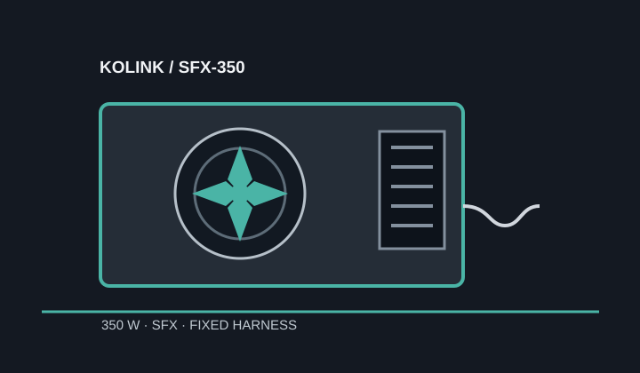

[ POWER CONVERSION // IDENTIFIED MODEL ]
Kolink SFX-350
Exact 350 W version designated SFX-350. The manufacturer's SFX range also includes different 250 W and 450 W models with different output limits.

HIGH-VOLTAGE SAFETY: Do not open or probe the PSU.
Verified model specifications
| Model / rated output | Kolink SFX-350; 350 W total. |
|---|---|
| Form factor / dimensions | SFX; 100 × 125 × 63 mm (length × width × height). |
| DC output rails | +3.3 V: 16 A; +5 V: 15 A; combined +3.3 V/+5 V: 105 W; +12 V: 27 A / 324 W; −12 V: 0.3 A / 3.6 W; +5 VSB: 3 A / 15 W. |
| Efficiency claim | Omitted: Kolink describes region-dependent 80 PLUS Bronze / 230V EU rating for the range; exact certification marking for this market-specific unit was not verified. |
| Cable-end connector counts | Fixed harness: ATX 20+4-pin ×1; CPU 4+4-pin ×1; PCIe 6+2-pin ×1; SATA ×2; Molex ×2. |
| Revision and cable cautions | Match the SFX-350 designation and rating table, not the 250 W or 450 W sibling. Fixed, non-modular cable harness; do not splice or repin. |
Compatibility & safe installation
- Check standard SFX mounting and the case's depth, airflow and fixed cable reach.
- The 324 W +12 V ceiling and single PCIe 6+2-pin lead make this model appropriate only when the complete system demand and GPU connector requirements fit those limits.
- Confirm regional markings and connectors from the physical label; family-wide efficiency text does not prove an individual regional unit's certification mark.
- Never open or probe the PSU.
Manufacturer sources
- Kolink SFX 350 W product pageManufacturer model identity, product family and regional efficiency description.
- Kolink SFX 350 W German product pageManufacturer product data for this 350 W model and its output/connectors.